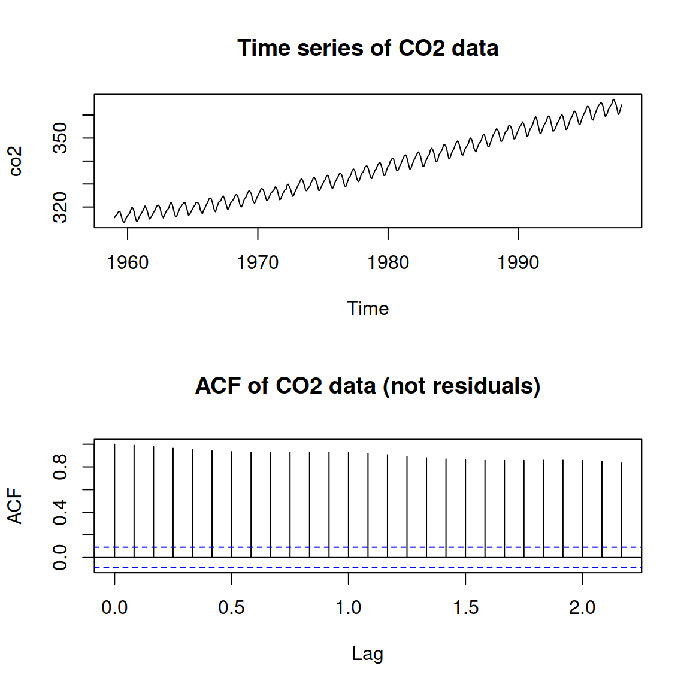
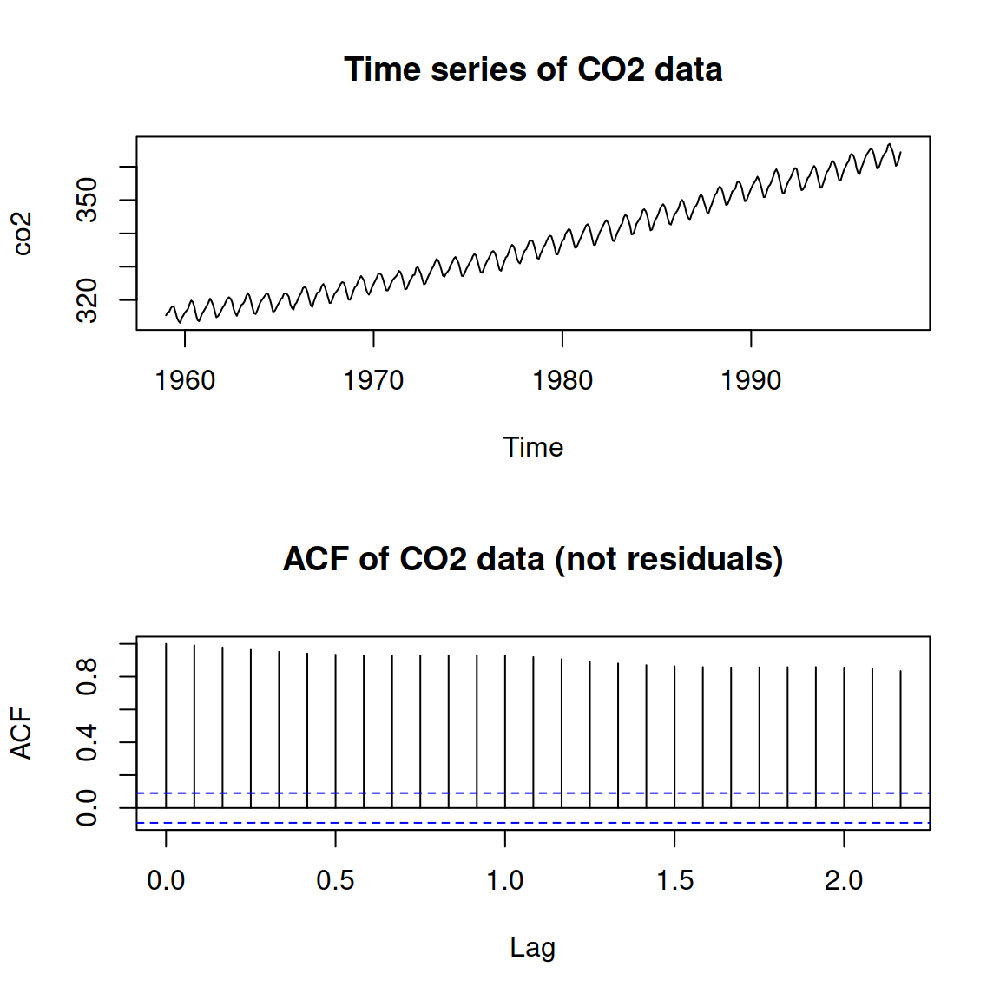
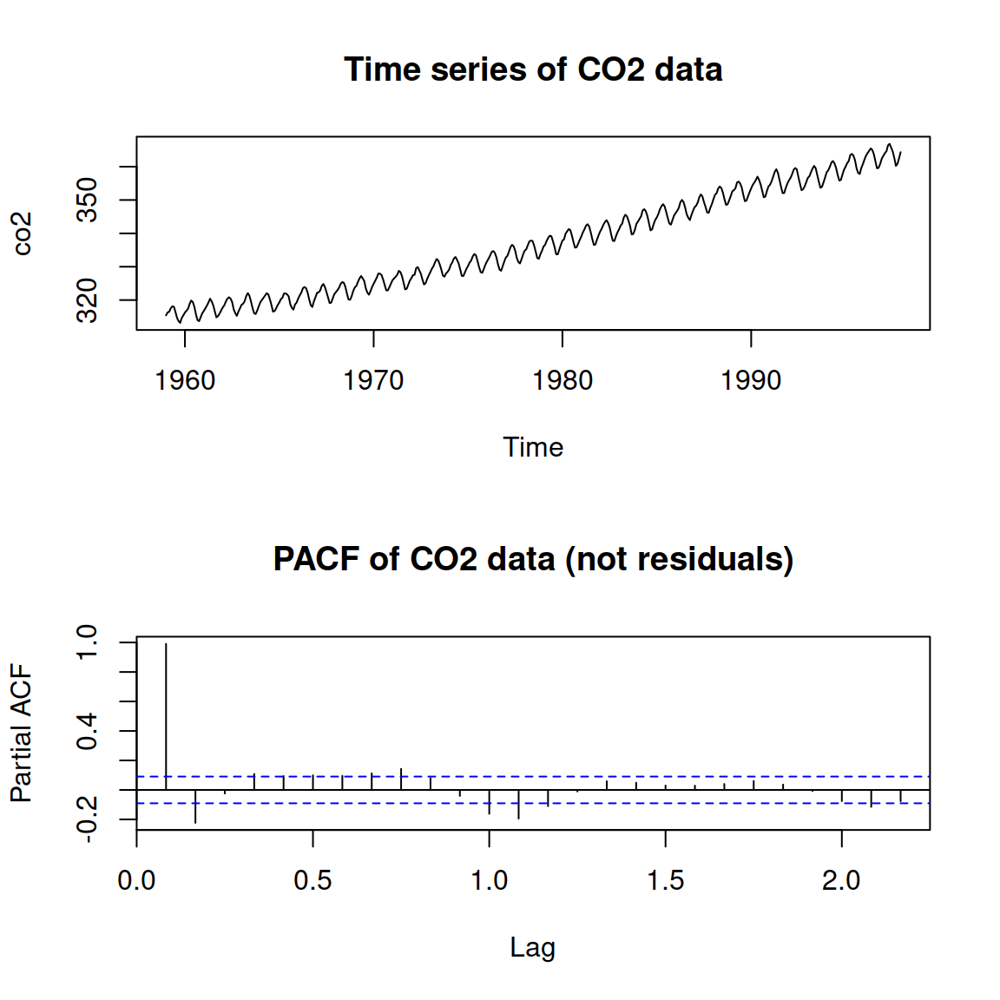

par(mfrow = c(2, 1))
plot(co2, main = "Time series of CO2 data")
acf(co2, main = "ACF of CO2 data (not residuals)")
The time of each observation is recorded, and they are equally spaced.
Serial Correlation: \(cor(\epsilon_{t-1}, \epsilon_t)\ne 0\)
R
The usual model: \(Y = X\underline{\beta} + \underline \epsilon\).
Assume that \(cor(\epsilon_{t-1}, \epsilon_t) = \rho\), \(cor(\epsilon_{t-2}, \epsilon_t)= \rho^2\), \(cor(\epsilon_{t-3}, \epsilon_t) = \rho^3\), etc.
This can be written as: \[ \epsilon_t = \rho\epsilon_{t-1} + z_t \] where \(z_t\sim N(0,\sigma^2)\). Note that \(V(\hat\epsilon_t) = \frac{\sigma^2}{1 - \rho^2}\).
As usual, we find a quantity with a known distribution: \[ d = \dfrac{\sum_{s=2}^n(\hat\epsilon_s - \hat\epsilon_{s-1})^2}{\sum_{s=1}^n\hat\epsilon_s^2}\sim\text{ some complicated distribution} \]
I’ll show an example of DW later.
| t | \(\hat \epsilon_t\) | \(\hat \epsilon_{t-1}\) | \(\hat \epsilon_{t-2}\) |
|---|---|---|---|
| 2 | \(\hat \epsilon_1\) | NA | NA |
| 2 | \(\hat \epsilon_2\) | \(\hat \epsilon_1\) | NA |
| 3 | \(\hat \epsilon_3\) | \(\hat \epsilon_2\) | \(\hat \epsilon_1\) |
| 4 | \(\hat \epsilon_4\) | \(\hat \epsilon_3\) | \(\hat \epsilon_2\) |
| \(\cdots\) | \(\cdots\) | \(\cdots\) | \(\cdots\) |
ACF: AutoCorrelation Function
The x-axis shows the lag, the y axis shows the correlations
The plot on the right shows an example of time series data.
par(mfrow = c(2, 1))
plot(co2, main = "Time series of CO2 data")
acf(co2, main = "ACF of CO2 data (not residuals)")
In the model we saw for DW, \[ \epsilon_t = \rho\epsilon_{t-1} + z_t \] which means that \[ \epsilon_t = \rho(\rho\epsilon_{t-2} + z_{t-1}) + z_t \]
The lag 2 correlation (the \(\rho^2\) term) includes the lag 1 correlation!
If we extend the model to: \[ \epsilon_t = \rho_1\epsilon_{t-1} + \rho_2\epsilon_{t-2} + z_t, \] then \(\rho_2\) is the correlation in the lag 2 terms, accounting for lag 1 terms!
This is the PACF, and it’s often much more useful.
The plot on the right shows a cyclic trend.
par(mfrow = c(2, 1))
plot(co2, main = "Time series of CO2 data")
pacf(co2, main = "PACF of CO2 data (not residuals)")
Most of the time, just check the PACF.
Serial correlation can be tested for any data set.
A non-significant result from the DW test means there is no autocorrelation in the residuals.
The quantity \(d = \dfrac{\sum_{s=2}^n(\hat\epsilon_s - \hat\epsilon_{s-1})^2}{\sum_{s=1}^n\hat\epsilon_s^2}\) is a statistic because:
The “partial” in PACF refers to:
Which of the following is not an assumption of the DW test?
Autocorrelation means that there are no possible insights into the data.
\(\sum_{i=1}^n\hat\epsilon_i = 0\), so some residuals are positive and some are negative.
The runs test just looks at the sign of the residuals. Consider the signs:
+ + - + - - - - + + - + + + + There are 7 runs in these residuals. Is this a lot of runs?
p-value: Probability of a result at least as extreme as the one obtained, under the null hypothesis.
For small numbers, we can look at all sequences of +’s and -’s and count the runs!
Given \(n_1\) +’s and \(n_2\) -’s, the mean and variance of the number of runs is: \[ \mu = \frac{2n_1n_2}{n_1 + n_2} + 1\text{, and }\sigma^2 = \frac{2n_1n_2(2n_1n_2 - n_1 - n_2)}{(n_1+n_2)^2(n_1 + n_2 - 1)} \]
In the actual distribution, \(P(runs\le \mu) = P(runs\le \mu -1/2) = P(runs < \mu + 1/2)\).
In the normal distribution this isn’t true, so we apply a correction factor:
shiny::runGitHub(repo = "DBecker7/DB7_TeachingApps",
subdir = "Apps/SerialCorrelation")